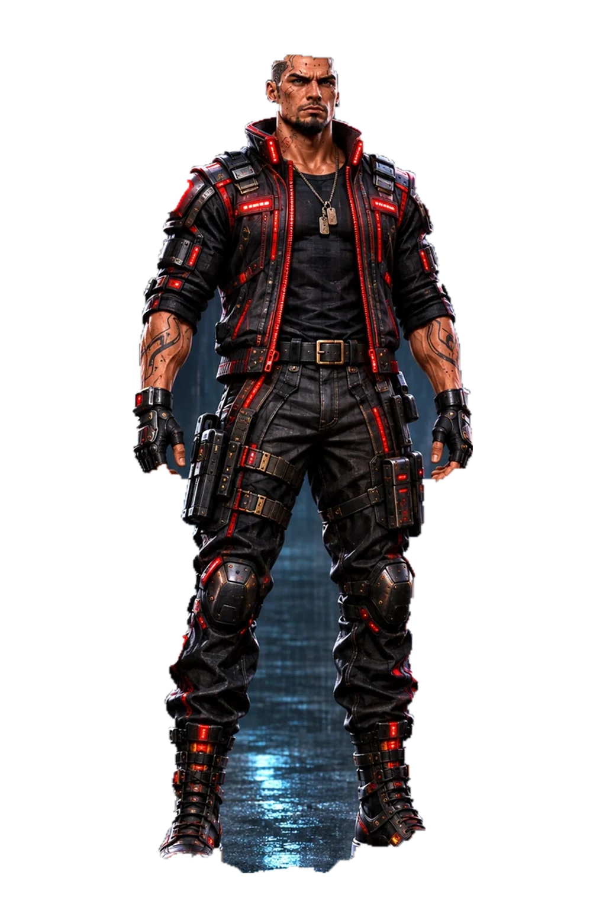

TURNAROUND REVIEW

Drag horizontally or use arrow keys to rotate. Eight supplied views, spaced 45° apart. This review does not change character saves or installed cyberware.
Cleaned v2 · Local workflow ready

Drag horizontally or use arrow keys to rotate. Eight supplied views, spaced 45° apart. This review does not change character saves or installed cyberware.